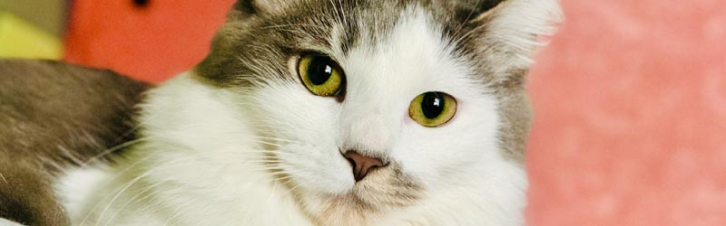
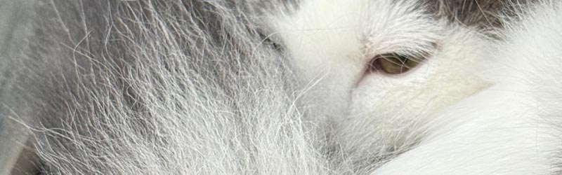
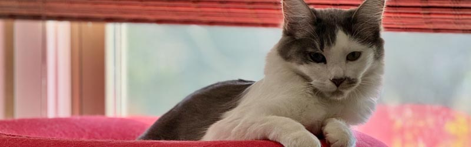
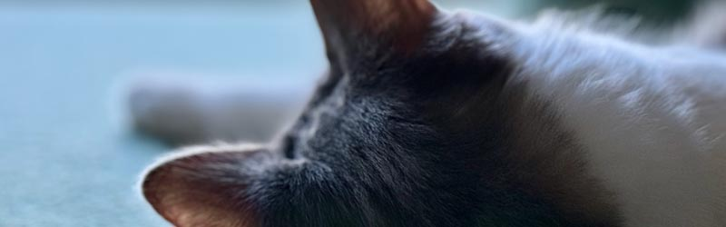

Kittens Make Awsome Pets
May 8th
Oh, so you want to know why kittens make paw-some pets, huh? Well, let me tell you, meow, they're just the fluffiest bundles of joy you could ever have in your life. They'll bring purrs of happiness into your home and fill your heart with so much love, meow. Read more...

Entertain Your Cat
May 1st
Oh, you're curious about the whole dry food versus wet food debate, huh? Well, let me break it down for you, meow. Dry food is like those crunchy snacks you love, while wet food is the juicy, saucy goodness that makes your taste buds sing. Read more...

Clean the Litterbox!
April 22nd
Well, well, well, look who's interested in keeping their kitty entertained, meow. Let me tell you all about the best cat toys that will have your feline friend purring with delight. Cats are natural hunters, so toys that mimic prey are always a hit. Read more...

Untitled
April 11th
Oh, darling, let's talk about the importance of keeping that litterbox squeaky clean for your precious feline, meow. A clean litterbox isn't just a nicety – it's a necessity for your cat's health and mental well-being. Read more...